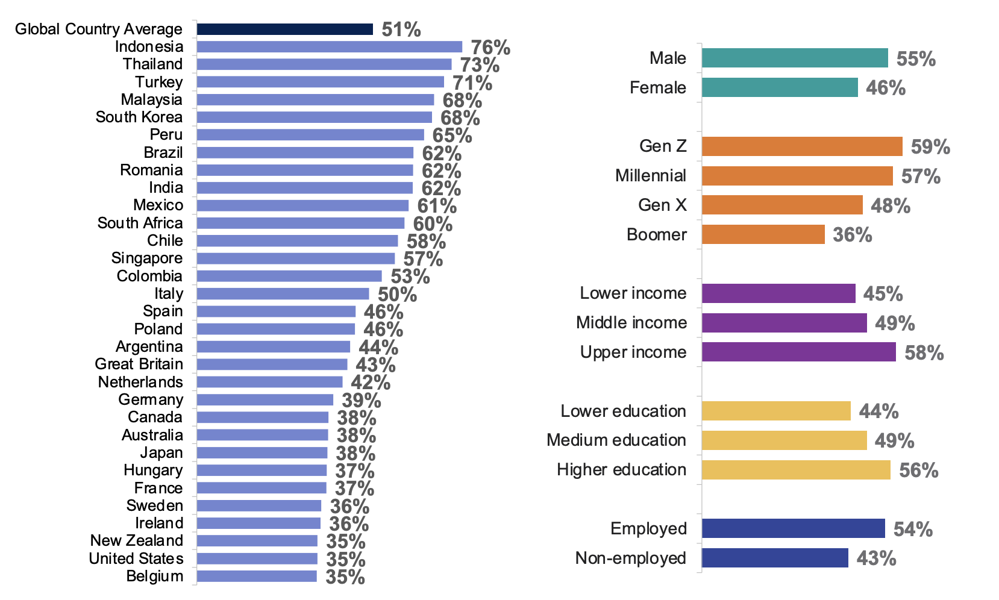

Global investments in Artificial Intelligence (AI) and Machine Learning (ML) have skyrocketed, such that “91% of top businesses have ongoing investments” (O’Donnellan, 2024). Despite the ubiquity of AI and ML in modern-day society, few understand its true capabilities, as shown in Figure 1, which is why I have investigated the effectiveness of ML in Cybersecurity and how it defends against Data Mining. ML is an incredibly versatile subset of AI, which works off three main principles: “task, error, and optimise” (Hosch, 2024). Due to its wide variety of uses, organisations use ML in many departments, such as IT, where it is used for its threat-detection algorithms (IBM, 2024), which helps it defend against malicious Data Mining. This article begins by analysing what ML is and its typical uses, followed by what Cybersecurity is and its links to ML, and finally what Data Mining is, its hazards and defence mechanisms.
